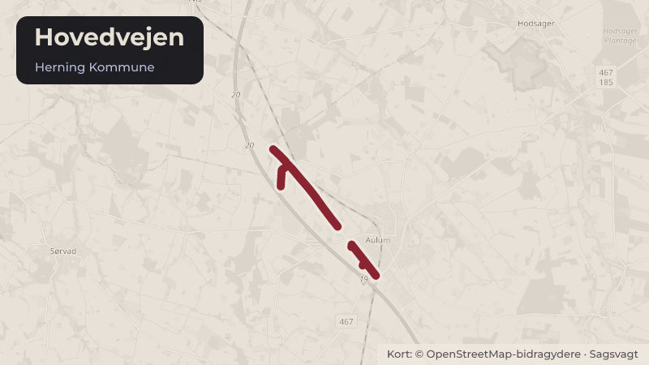

På dagsordenen 23. november, Byplan- og Bosætningsudvalg, Herning
Foreløbig vedtagelse af lokalplan for erhervsområde ved Hovedvejen i Aulum
Byggeri og lokalplanerErhverv og job

Kort fortalt
- Hvem
- Byplan- og Bosætningsudvalg, Herning Kommune
- Hvornår
- Mandag 23. november 2026
- Status
- På dagsordenen. Sagen behandles på mødet.
Er noget forkert her? Skriv til os
Hvad kan du gøre?
- Skriv til politikerne
- Udvalgets møder er lukkede, men du kan skrive til medlemmerne før mødet mandag 23. november 2026. Du finder dem på herning.dk.
Læs hele sagen Kommunens egen tekst
Baggrund
Lokalplanen udarbejdes på baggrund af et flerårigt behov for udlæg af nye erhvervsarealer i og omkring
Aulum. Det eksisterende erhvervsområde nord for Hovedvejen er fuldt udbygget, og alle matrikler er
solgt. Der er derfor ikke mulighed for, at nye virksomheder kan etablere sig i Aulum inden for de
eksisterende erhvervsområder.
På den baggrund ønskes der udlagt et nyt attraktivt erhvervsområde med gode tilkørselsmuligheder og
stor synlighed fra motorvejen, og som skal gøre det muligt for flere virksomheder at etablere sig i Aulum.
Lokalplanområdet
Lokalplanforslaget omfatter et areal på ca. 14,5 ha og omfatter matr.nr. 1k, 1l, 2f og 3n Jersild By, Avlum.
Området ligger i den sydlige del af Aulum og afgrænses mod nord af Hovedvejen og mod syd af
Holstebromotorvejen.
Lokalplanområdet disponeres som et samlet erhvervsområde langs Hovedvejen og Holstebromotorvejen,
som vist på nedenstående illustration.
Illustration af lokalplanområdets aflange disponering langs Holstebromotorvejen samt arealer til
regnvandshåndtering.
Lokalplanens formål
Lokalplanen har til formål at fastlægge områdets anvendelse til erhvervsformål, for virksomheder i
miljøklasse 3-6. Grundet områdets nære beliggenhed og gode tilkørselsforhold til motorvejen kan der her
etableres transport-, logistik- og lagervirksomheder, pladskrævende virksomheder, lager hoteller og
øvrige virksomheder, som har et særligt behov for nærheden til motorvejen.
Yderligere er det lokalplanens formål at sikre rammerne for regnvandshåndtering og bevaring af dele af
den eksisterende beplantning inden for lokalplanens afgrænsning.
Lokalplanens indhold
Disponeringen af erhvervsgrundene skal tage højde for vejbyggelinjer langs både Hovedvejen og
Holstebromotorvejen. Langs motorvejen skal der tages højde for en vejbyggelinje på 35 meter samt
højde- og passagetillæg. Vejadgang til området skal ske fra Hovedvejen.
Grunde må ikke udstykkes med et areal på mindre end 4.000 m². Den maksimale bebyggelsesprocent for
området fastsættes til 70 %. Bebyggelse må opføres i op til to etager og med en maksimal højde på 12
meter. Derudover skal der etableres udendørs opholdsarealer svarende til 5 % af bruttoetagearealet til
erhverv.
Da området er udpeget som område med særlige drikkevandsinteresser (OSD), må der ikke etableres
virksomheder eller aktiviteter, som udgør en risiko for grundvandet.
Inden for lokalplanområdet er der udpeget bevaringsværdig beplantning i form af trægrupper samt tre
særligt bevaringsværdige træer.
Vejadgang
Det forventes at de fremtidige virksomheder vil få vejadgang direkte fra Hovedvejen, hvilket betyder at
der ikke skal tages stilling til nyt vejnavn.
Vandhåndtering
Et væsentligt fokusområde i planlægningen er håndtering af regnvand, herunder både ekstremregn og
hverdagsregn.
Ekstremregn foreslås håndteret i en klimagrøft/lavning med en kapacitet på ca. 1.650 m³, som forventes
at omfatte et areal på ca. 4.000 m². Der reserveres areal hertil i den nordlige del af lokalplanområdet
inden for det område, der er markeret med blåt på illustrationen.
Hverdagsregn skal håndteres i et regnvandsbassin, som skal etableres uden for lokalplanens
afgrænsning syd for motorvejen. Regnvandsbassinet forventes at omfatte et areal på ca. 3,17 ha. For at
kunne realisere denne løsning skal der etableres et forsinkelsesbassin på ca. 5.000 m² inden for
lokalplanområdet. Forsinkelsesbassinet placeres inden for det samme areal til regnvandshåndtering, der
er markeret med blåt i den nordlige del af lokalplanområdet.
Gældende plangrundlag
Der er ingen planlægning for området i dag, og er beliggende i landzone. Med vedtagelsen af lokalplanen
overføres lokalplanområdet til byzone.
Indstilling
DIREKTØREN FOR BY, ERHVERV OG KULTUR INDSTILLER,
at Byplan- og Bosætningsudvalget indstiller forslag til lokalplan 01.E11.1 for erhvervsområde ved
Hovedvejen i Aulum til foreløbig vedtagelse.
Kilde: Herning Kommune, Byplan- og Bosætningsudvalg, dagsorden fra mødet mandag 23. november 2026, punkt 6. Læs den originale sag hos kommunen.
Bydele i sagen: Aulum
Steder i sagen: Hovedvejen